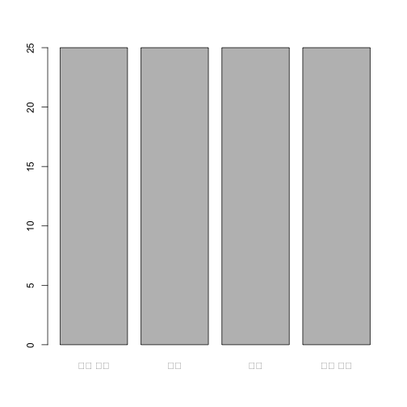
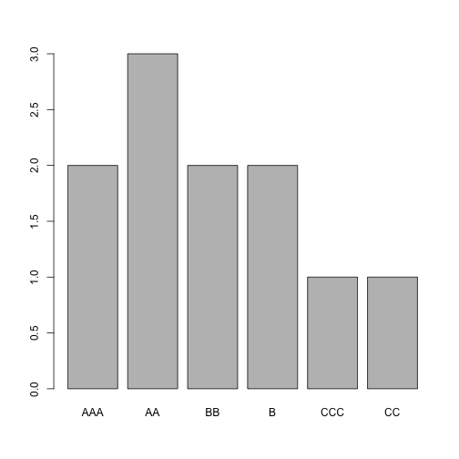

데이터 과학 – 기초 통계
금융공학을 위한 R 언어 기초
금융공학을 위한 R 기초
현재가치(Present Value)
현재가치는 현재가치와 장래가치로 구분되며, 미래에 얻게 될 확실한 부(富)의 가치를 현재의 가치로 환산한 값을 말한다. 즉, 미래에 얻게 될 가치에 대해 시간에 대한 기회비용을 고려하여 비교하는 척도가 된다.
\[\mbox{PV} = \frac{\mbox{FV}}{(1+r)^n}\]
- \(\mbox{PV} = 현재가치(Present Value)\)
- \(\mbox{FV} = 미래가치(Future Value)\)
- \(r = 무위험이자율\)
- \(n = 기간\)
특정기간 한 시점이 아니라 여러 시점이 \(n\)인 경우까지 확장하면 다음과 같다.
\[\mbox{PV} = \frac{\mbox{CF}}{(1+r)^1} + \frac{\mbox{CF}}{(1+r)^2} + \frac{\mbox{CF}}{(1+r)^3} + ... + \frac{\mbox{CF}}{(1+r)^n}\]
- \(\mbox{PV} = 현재가치(Present Value)\)
- \(\mbox{CF} = 현금흐름(Cash Flow)\)
- \(r = 무위험이자율\)
- \(n = 기간\)
갑돌 가구에 현금흐름이 1년후 1,000원, 2년후 2,000원, 3년후 3,000원의 현금이 들어올 것으로 예상되는데, 현재 이자율 3%를 가정하면 현재가치는 얼마나 될까? \(1,000+2,000+3,000\) 보다 적은 가치를 확인할 수 있다.
# 현재가치 예제 ----------------------------------------
## 갑돌 현금흐름 작성
cash_df <- data.frame(household =c("갑돌", "갑돌", "갑돌"),
cash_flow =c(1000,2000, 3000),
year = c(1,2,3))
cash_df household cash_flow year
1 갑돌 1000 1
2 갑돌 2000 2
3 갑돌 3000 3
## 1년 후 현금흐름 계산(3%)
(pv_cash <- 1000 * (1+0.03) ^ -1)[1] 970.8738
## 년도별 현금흐름 계산(3%)
cash_df$pv <- cash_df$cash_flow * (1+0.03) ^ -cash_df$year
sum(cash_df$pv)[1] 5601.491
자료구조
금융공학에서 R을 활용할 경우 데이터를 R에서 처리할 수 있는 자료구조로 표현하는 것이다. 자주 사용되는 자료구조는 데이터프레임과 리스트다. 그리고 요인(factor)에 대한 이해도 필수적이다.
- 데이터프레임(dataframe)
- 리스트(list)
- 요인(factor)
데이터프레임
데이터프레임은 동일한 길이를 갖는 벡터를 쭉 연결하여 생성된 자료구조로 다른 프로그래밍 언어에는 존재하지 않는 자료구조다. 왜냐하면 벡터의 자료형이 숫자형, 문자형, 논리형을 다 받을 수 있기 때문이다. 이런 점이 행렬자료형과 비교하여 특별히 비교되는 큰 특징이다. 데이터프레임을 생성할 때 동일한 길이를 갖는 벡터를 생성하고 나서, data.frame에 넣게 되면 데이터프레임이 생성된다.
# 자료구조 ---------------------------------------------
## 데이터프레임 ----------------------------------------
company <- c("갑사", "갑사", "갑사", "을사", "을사", "을사")
cash_flow <- c(1000,2000, 3000, 3000, 4000, 5000)
year <- c(1,2,3,1,2,3)
cash_df <- data.frame(company, cash_flow, year)요인(Factor)
요인은 범주를 표현하는 자료구조로 숫자형와 문자형 자료구조의 특정을 동시에 갖는데 숫자가 고정된 범주로 표현된다. 예를 들어, 성별을 남자 여자 두 수준으로 표현하는 경우 이를 R 내부적으로 1, 2 정수로 저장하여 저장공간을 부동소수점과 비교하여 획기적으로 줄일 수 있지만 사람이 읽고 이해할 수 있도록 “M”, “F”로 표현하는 것이 좋은 사례가 된다. 채권에 대한 신용도를 평가할 때 S&P, 무디스, 피치 같은 글로벌 신용평가기관과 한국의 한국기업평가같은 회사가 회사가 발행되는 채권에 대해 신용도를 AAA, AA, A, …, CCC와 같은 방식으로 표현하게 되는데 이런 경우 요인형 자료구조가 적절한 자료형이 된다.
연속형 변수가 있을 경우 이를 범주형 변수로 변환할 필요가 있다. 이런 경우 cut 함수를 사용하여 숫자형 자료를 범주형 요인자료형으로 변환시킨다. 당연히 연속형 구간을 나누는 구분점이 필요한데 breaks를 인자로 넣어 정해 둔다. 마치 중간고사 기말고사 시험을 보게되면 0점에서 100점 사이 점수가 나오게 되고 수우미양가로 나누는 것과 동일한 로직을 프로그램으로 구현한 것으로 볼 수 있다.
## 요인(Factor) ----------------------------------------
eval_v <- sample(1:100, 100)
eval_f <- cut(x = eval_v, breaks = c(0, 25, 50, 75, 100))
levels(eval_f) <- c("매우 낮음", "낮음", "높음", "매우 높음")
plot(eval_f)
기업신용등급을 보게되면 우수, 높은 등급부터 시작해서 채무불이행까지 쭉 나열되어 있다. 이런 경우 요인에 대해 순서가 있게 되고 이를 표현하게 되는 방식 factor에 ordered=TRUE를 반영하면 순서를 자료형에 담백하게 담아낼 수 있다.
## 순서가 있는 요인(Factor) ----------------------------------------
bond_rating_v <- c("B", "AA", "CCC", "CC", "BB", "AAA", "AA", "AA", "AAA", "B", "BB")
unique(bond_rating_v)[1] "B" "AA" "CCC" "CC" "BB" "AAA"
bond_rating_f <- factor(bond_rating_v, ordered=TRUE, levels=c("AAA", "AA", "BB", "B", "CCC", "CC"))
plot(bond_rating_f)
리스트
데이터프레임과 마찬가지로 벡터를 조합하여 생성할 수도 있지만, 단순한 문자형 벡터부터, 데이터프레임, 내부에 행렬 등 다양한 데이터를 한곳에 담아낼 수 있다. 이런 경우, 상황에 따라 필요한 데이터를 꺼내서 사용할 수 있고 메모리에 산재된 다수 데이터를 한 자료구조를 통해 통일되고 일관되게 활용할 수 있다는 장점도 생긴다.
## 리스트(list) ----------------------------------------
name <- "실업율과 경제성장률"
year <- c(2012,2013,2014,2015)
growth <- c(2.3, 2.9, 3.3, 2.6, 2.7)
unemp <- c(3.4, 3.2, 3.1, 3.5, 3.6)
cor_m <- cor(cbind(growth, unemp))
(economy_lst <- list(name=name, year=year, growth=growth, unemp=unemp, cor_m=cor_m))$name
[1] "실업율과 경제성장률"
$year
[1] 2012 2013 2014 2015
$growth
[1] 2.3 2.9 3.3 2.6 2.7
$unemp
[1] 3.4 3.2 3.1 3.5 3.6
$cor_m
growth unemp
growth 1.000000 -0.707494
unemp -0.707494 1.000000
Split-Apply-Combine 전략
리스트 자료형을 갖게 되면 Split-Apply-Combine 전략을 활용하면 유용하다. 데이터프레임 내부 일단 쪼개는 변수를 하나 생성하고 나서, split 함수로 그룹을 나눠게 되면 리스트로 자료형이 변환된다. 각 그룹으로 나눠지 리스트 내부 원소에 대해 적절한 연산작업을 적용하고 나서 unsplit 함수로 결합하게 되면 다시 데이터프레임으로 복원된다.
## 데이터
company <- c("갑사", "갑사", "갑사", "을사", "을사", "을사")
cash_flow <- c(1000,2000, 3000, 3000, 4000, 5000)
year <- c(2015,2016,2017,2015,2016,2017)
cash_df <- data.frame(company, cash_flow, year)
## 쪼개기(Split)
split_var <- cash_df$year
split_cash_lst <- split(cash_df, split_var)
## 적용하기(Apply)
split_cash_lst$`2015`$cash_flow <- 0
## 결합하기(Combine)
unsplit(split_cash_lst, split_var) company cash_flow year
1 갑사 0 2015
2 갑사 2000 2016
3 갑사 3000 2017
4 을사 0 2015
5 을사 4000 2016
6 을사 5000 2017
Apply 적용
벡터연산을 수행하게 되면 R 코드가 간결해지는 장점과 함께 반복문 repeat, while, for 을 사용하는 것과 비교하여 속도도 빠르다. 문제는 apply 계열 함수가 너무 많아서 처음 접하게 되면 언제 무엇을 어떻게 사용하는지 난감한 경우가 많다. 가장 많이 사용되는 apply 가족 함수는 다음과 같다.
| 함수명 | 함수명 설명 |
|---|---|
apply |
행과 열에 방향으로 데이터프레임을 받아 함수를 적용할 때 주로 사용 |
lapply |
리스트 자료에 대해 함수를 적용할 때 사용 |
sapply |
lapply를 적용한 반환결과를 단순화시킴, 될때가 있고 안될때도 많음. |
vapply |
lapply를 적용한 반환결과를 엄격하게 변환시킨, 단 출력 자료형을 명시해야 함. |
기본개념
리스트 자료형을 R로 불러오게 되면 가장 먼저 리스트에 들어가 있는 자료형을 파악하는 것이다. 이를 for 문을 사용하게 되면 3줄이 필요한데, lapply를 사용하면 한줄이면 가능하다.
# 기본개념 ----------------------------------------
## for 루프
samsung_lst <- list(stock_name = "삼성전자", stock_code = "005930",
price = 2291000, buy_or_sell = TRUE,
df = data.frame(x=c(1), y=c(2)))
for(i in samsung_lst) {
print(class(i))
}[1] "character"
[1] "character"
[1] "numeric"
[1] "logical"
[1] "data.frame"
## apply 가족
lapply(samsung_lst, class)$stock_name
[1] "character"
$stock_code
[1] "character"
$price
[1] "numeric"
$buy_or_sell
[1] "logical"
$df
[1] "data.frame"
Apply 가족 (샤프지수)
apply 가족을 소개하기 전에 데이터를 불러와야 하기 때문에 quantmod 팩키지에서 야후와 구글 데이터를 가져온다. ticker와 동일한 데이터프레임이 자동생성되기 때문에 이를 list로 묶어 두 주식을 하나로 묶어 portfolio라고 이름짖고 나서 lapply 함수를 통해 summary 함수를 적용시킨다.
library(quantmod)
getSymbols("AAPL", src = 'yahoo', from = '2017-05-01', auto.assign = T)[1] "AAPL"
getSymbols("GOOG", src = 'yahoo', from = '2017-05-01', auto.assign = T)[1] "GOOG"
portfolio <- list(apple=AAPL, google=GOOG)
lapply(portfolio, FUN = summary)$apple
Index AAPL.Open AAPL.High AAPL.Low
Min. :2017-05-01 Min. : 35.73 Min. : 35.88 Min. : 35.50
1st Qu.:2018-03-25 1st Qu.: 42.89 1st Qu.: 43.26 1st Qu.: 42.51
Median :2019-02-19 Median : 49.79 Median : 50.20 Median : 49.51
Mean :2019-02-16 Mean : 58.90 Mean : 59.57 Mean : 58.25
3rd Qu.:2020-01-13 3rd Qu.: 67.16 3rd Qu.: 68.21 3rd Qu.: 66.46
Max. :2020-12-04 Max. :137.59 Max. :137.98 Max. :130.53
AAPL.Close AAPL.Volume AAPL.Adjusted
Min. : 35.55 Min. : 20197800 Min. : 33.70
1st Qu.: 42.83 1st Qu.: 87686200 1st Qu.: 41.20
Median : 49.84 Median :113493800 Median : 48.53
Mean : 58.95 Mean :128637895 Mean : 57.62
3rd Qu.: 67.68 3rd Qu.:153649500 3rd Qu.: 66.56
Max. :134.18 Max. :426884800 Max. :133.95
$google
Index GOOG.Open GOOG.High GOOG.Low
Min. :2017-05-01 Min. : 901.8 Min. : 913 Min. : 894.8
1st Qu.:2018-03-25 1st Qu.:1052.8 1st Qu.:1065 1st Qu.:1040.9
Median :2019-02-19 Median :1150.1 Median :1170 Median :1143.0
Mean :2019-02-16 Mean :1195.6 Mean :1208 Mean :1184.0
3rd Qu.:2020-01-13 3rd Qu.:1301.1 3rd Qu.:1312 3rd Qu.:1294.6
Max. :2020-12-04 Max. :1824.5 Max. :1847 Max. :1822.7
GOOG.Close GOOG.Volume GOOG.Adjusted
Min. : 898.7 Min. : 347500 Min. : 898.7
1st Qu.:1053.2 1st Qu.:1209125 1st Qu.:1053.2
Median :1155.6 Median :1458200 Median :1155.6
Mean :1196.5 Mean :1650866 Mean :1196.5
3rd Qu.:1303.5 3rd Qu.:1856425 3rd Qu.:1303.5
Max. :1828.0 Max. :6207000 Max. :1828.0
샤프지수(Sharpe Ratio)은 (또는 샤프 지수 등)은 금융에서 투자성과를 평가함에 있어 해당 투자의 위험을 조정해 반영한 한가지 측도로 볼 수 있다.
즉, 분산으로 측정된 위험을 가정하고 해당 위험대비 수익이 높은 것을 좋은 것으로 판단한다.
\(S_a = \frac{E[R_a-R_b]}{\sigma_a} = \frac{E[R_a-R_b]}{\sqrt{\mathrm{var}[R_a-R_b]}}\)
- \(R_a\): 자산수익률
- \(R_b\): 무위험 수익률이나 코스피 같은 지수의 수익률 등, 기준지표(benckmark) 자산의 수익률이다.
- \(E[R_a-R_b]\): 기준지표 수익률 대비 자산의 초과수익률
- \(\sigma_a\): 자산수익률의 표준편차
샤프지수는 년을 기준으로 계산한다. 물론 주가가 주식분할과 배당을 반영하여 주식 수익률을 계산하는 것이 일반적이다. 삼성전자, 네이버, 현대자동차를 이영애 누님이 한창 달리던 카드대란을 뒤로하고 새롭게 출범한 노무현 정권이후 샤프지수를 구해본다. sharpe_ratio을 두고 무위험 수익을 0.3%로 가정하여 산출한다.
사실 동일한 함수가 PerformanceAnalytics에 구현되어 있어 이를 비교하기 위해 함께 동일한 값을 산출해 보자.
getSymbols('005930.KS',src='yahoo', from = "2003-01-01", auto.assign = TRUE)[1] "005930.KS"
`005930.KS`$`005930.KS.Close` <- `005930.KS`$`005930.KS.Adjusted`
samsung_retun <- periodReturn(`005930.KS`, period='yearly',subset='2003::')
getSymbols('035420.KS',src='yahoo', from = "2003-01-01", auto.assign = TRUE)[1] "035420.KS"
`035420.KS`$`035420.KS.Close` <- `035420.KS`$`035420.KS.Adjusted`
naver_retun <- periodReturn(`035420.KS`, period='yearly',subset='2003::')
getSymbols('005380.KS',src='yahoo', from = "2003-01-01", auto.assign = TRUE)[1] "005380.KS"
`005380.KS`$`005380.KS.Close` <- `005380.KS`$`005380.KS.Adjusted`
hmc_retun <- periodReturn(`005380.KS`, period='yearly',subset='2003::')
sharpe_ratio <- function(returns) {
(mean(returns) - .0003) / sd(returns)
}
portfolio_return_lst <- list(samsung_retun, naver_retun, hmc_retun)
lapply(portfolio_return_lst, sharpe_ratio)[[1]]
[1] 0.881135
[[2]]
[1] NA
[[3]]
[1] 0.3634502
library(PerformanceAnalytics)Error in library(PerformanceAnalytics): there is no package called 'PerformanceAnalytics'
lapply(portfolio_return_lst, SharpeRatio.annualized, Rf=.0003, geometric=FALSE) Error in match.fun(FUN): 객체 'SharpeRatio.annualized'를 찾을 수 없습니다
lapply, sapply, vapply
해당 주식의 연도별 최대 수익률을 구해보면 각 함수가 왜 사용되는지 이해가 쉽다. lapply 함수가 기본이 되고, 경우에 따라 sapply 함수로 간략하고 빠르게 결과값을 확인하기도 하고, vapply 함수를 사용해서 훨씬 더 유연하게 활용도 가능하지만, 문제는 자유도가 많은 만큼 그에 대응하여 코드가 길어지고 출력형에 대해서도 일일이 명시적으로 코드를 작성할 필요가 생긴다.
## lapply, sapply, vapply --------------------------------------------------
## 해당 주식에 대한 최대 수익율을 계산
lapply(portfolio_return_lst, max)[[1]]
[1] 5.292966
[[2]]
[1] NA
[[3]]
[1] 2.092933
sapply(portfolio_return_lst, max)[1] 5.292966 NA 2.092933
vapply(portfolio_return_lst, FUN = function(x) {max(x)},
FUN.VALUE = numeric(1))[1] 5.292966 NA 2.092933